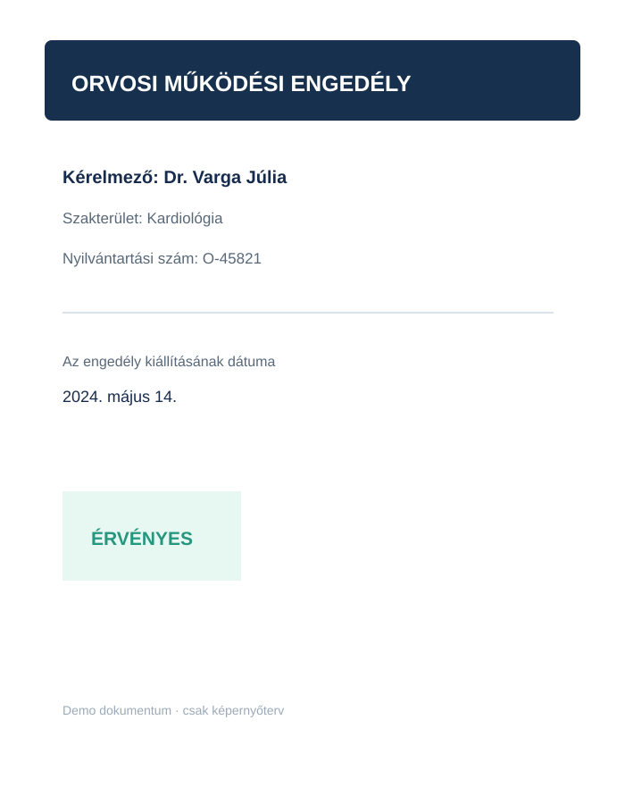

LyfePulse
ADMINISZTRÁCIÓ
Orvosi fiók-kérelmek
Ellenőrizd a kérelmező személyazonosságát és dokumentumait.
FELHASZNÁLÓI KÉRELMEK
Orvosi fiók létrehozása
| KÉRELMEZŐ | KÉRELEMAZONOSÍTÓ | BEÉRKEZETT | STÁTUSZ |
|---|
ADMINISZTRÁCIÓ
Feldolgozott kérelmek archívuma
A jóváhagyott és elutasított kérelmek korábbi nyilvántartása.
LEZÁRT KÉRELMEK
Archívum
| KÉRELMEZŐ | KÉRELEMAZONOSÍTÓ | BEÉRKEZETT | STÁTUSZ | FELDOLGOZVA |
|---|
KÉRELEM RÉSZLETEI
Ellenőrizd a megadott adatokat és a csatolt dokumentumokat.
Kérelmező adatai
SZAKTERÜLET
E-MAIL-CÍM
MŰKÖDÉSI NYILVÁNTARTÁSI SZÁM
KÉRELEMAZONOSÍTÓ
BEÉRKEZÉS IDEJE
A fiók csak a dokumentumok ellenőrzése után aktiválható.
Azonosító dokumentumok
